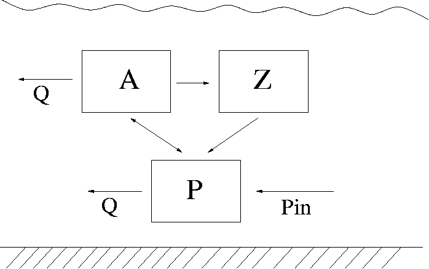
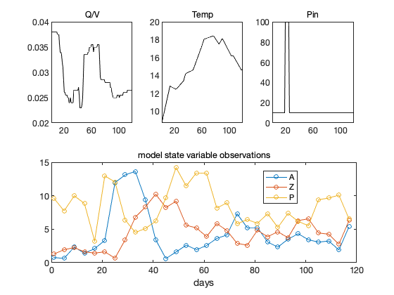
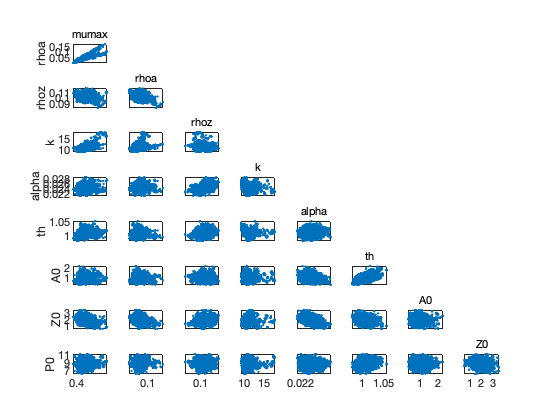
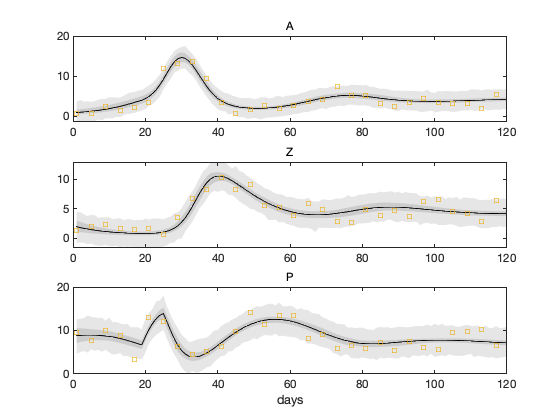

MCMC toolbox » Examples » Algae
Algae example
The example uses functions algaesys, algaefun and algaess.
We study the following system

This is a simplified lake algae dynamics model. We consider phytoplankton A, zooplankton Z and nutrition P (eg. phosphorus) available for A in the water. The system is affected by the water outflow/inflow Q, incoming phosphorus load Pin and temperature T. It is described as a simple predator - pray dynamics between A and Z. The growth of A is limited by the availability of P and it depends on the water temperature T. The inflow/outflow Q affects both A and P, but not Z. We use the following equations:
dA/dt = (μ - ρa - Q/V - αZ) A
dZ/dt = αZA-ρz Z
dP/dt = -Q/V (P-Pin) +
(ρa-μ)A+ρzZ
where the growth rate µ depends on both temperature T and phosphorus P
μ = μmaxθ(T-20)P/(k+P).
The data set is stored in algaedata.mat. First we load and plot the data.
clear model data params options load algaedata.mat figure(1); clf for i =1:3 subplot(2,3,i) plot(data.xdata(:,1),data.xdata(:,i+1),'-k'); title(data.xlabels(i+1)); xlim([1,120]) end subplot(2,1,2) plot(data.ydata(:,1),data.ydata(:,2:end),'o-'); title('model state variable observations'); legend(data.ylabels(2:end),'Location','best'); xlabel('days');
The model sum of squares in file algaess.m is given in the model structure.
model.ssfun = @algaess;
All parameters are constrained to be positive. The initial concentrations are also unknown and are treated as extra parameters.
params = {
{'mumax', 0.5, 0}
{'rhoa', 0.03, 0}
{'rhoz', 0.1, 0}
{'k', 10, 0}
{'alpha', 0.02, 0}
{'th', 1.14, 0, Inf, 1.14, 0.2} % N(0.14, 0.2^2)1{th>0} prior
% initial values for the model states
{'A0', 0.77, 0, Inf, 0.77, 2 }
{'Z0', 1.3, 0, Inf, 1.3, 2 }
{'P0', 10, 0, Inf, 10, 2 }
};
We assume having at least some prior information on the repeatability of the observation and assign rather non informational prior for the residual variances of the observed states. The default prior distribution is sigma2 ~ invchisq(S20,N0), the inverse chi squared distribution (see for example Gelman et al.). The 3 components (A, Z, P) all have separate variances.
model.S20 = [1 1 2]; model.N0 = [4 4 4];
First generate an initial chain.
options.nsimu = 1000; [results, chain, s2chain]= mcmcrun(model,data,params,options);
Sampling these parameters: name start [min,max] N(mu,s^2) mumax: 0.5 [0,Inf] N(0,Inf) rhoa: 0.03 [0,Inf] N(0,Inf) rhoz: 0.1 [0,Inf] N(0,Inf) k: 10 [0,Inf] N(0,Inf) alpha: 0.02 [0,Inf] N(0,Inf) th: 1.14 [0,Inf] N(1.14,0.2^2) A0: 0.77 [0,Inf] N(0.77,2^2) Z0: 1.3 [0,Inf] N(1.3,2^2) P0: 10 [0,Inf] N(10,2^2)
Then re-run starting from the results of the previous run, this will take couple of minutes.
options.nsimu = 5000; [results, chain, s2chain] = mcmcrun(model,data,params,options, results);
Using values from the previous run Sampling these parameters: name start [min,max] N(mu,s^2) mumax: 0.398492 [0,Inf] N(0,Inf) rhoa: 0.0348433 [0,Inf] N(0,Inf) rhoz: 0.0982238 [0,Inf] N(0,Inf) k: 9.4219 [0,Inf] N(0,Inf) alpha: 0.0233986 [0,Inf] N(0,Inf) th: 1.00471 [0,Inf] N(1.14,0.2^2) A0: 1.16216 [0,Inf] N(0.77,2^2) Z0: 2.07551 [0,Inf] N(1.3,2^2) P0: 8.54463 [0,Inf] N(10,2^2)
Chain plots should reveal that the chain has converged and we can use the results for estimation and predictive inference.
figure(2); clf mcmcplot(chain,[],results,'pairs'); figure(3); clf mcmcplot(chain,[],results,'denspanel',2);
Function chainstats calculates mean ans std from the chain and estimates the Monte Carlo error of the estimates. Number tau is the integrated autocorrelation time and geweke is a simple test for a null hypothesis that the chain has converged.
chainstats(chain,results)
MCMC statistics, nsimu = 5000
mean std MC_err tau geweke
---------------------------------------------------------------------
mumax 7.3133 8.9169 1.8501 612.9 0.034271
rhoa 0.026332 0.014272 0.002472 416.33 0.27418
rhoz 0.097931 0.0057379 0.00069317 81.933 0.9884
k 346.6 434.88 90.632 615.33 0.030661
alpha 0.023557 0.0013095 0.00015524 92.634 0.9452
th 1.0123 0.013533 0.0016359 114.66 0.98836
A0 1.0649 0.30144 0.024486 37.659 0.9064
Z0 1.8118 0.45222 0.050899 66.175 0.82012
P0 8.822 0.85789 0.065738 37.405 0.98279
---------------------------------------------------------------------
In order to use the mcmcpred function we need function modelfun with input arguments given as modelfun(xdata,theta). We construct this as an anonymous function.
modelfun = @(d,th) algaefun(d(:,1),th,th(7:9),d);
We sample 500 parameter realizations from chain and s2chain and calculate the predictive plots.
nsample = 500; out = mcmcpred(results,chain,s2chain,data.xdata,modelfun,nsample); figure(4); clf mcmcpredplot(out); % add the 'y' observations to the plot hold on for i=1:3 subplot(3,1,i) hold on plot(data.ydata(:,1),data.ydata(:,i+1),'s'); ylabel(''); title(data.ylabels(i+1)); hold off end xlabel('days');